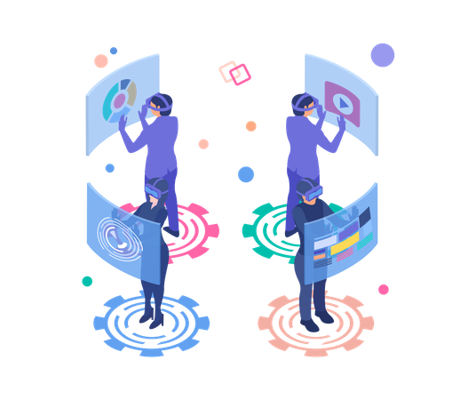

Artificial Reality Risks
A page describing the risks associated with artificial reality.
Despite the potential benefits and opportunities of VR, there are also some challenges and risks that VR faces in the market. Some of these include:
1. Cost: VR content and systems are still comparatively pricey, making them unavailable to many users, particularly in poor nations. VR's expensive price may prevent it from being widely used and distributed in the market.
2. Quality: VR content and equipment are still lacking in terms of performance and quality standardization and optimization. Low VR quality can lead to negative consequences including motion sickness, eye strain, or cyber-sickness, as well as technical problems and user displeasure.
3. Material: There is still a dearth of VR material available in different formats, genres, and platforms. The lack of material might make VR users less diverse, appealing, and varied.
4. Regulation: VR is still not well regulated and governed by laws and ethics across various domains, such as data privacy, intellectual property, consumer protection, content moderation, etc. The lack of regulation may expose VR to legal, ethical, or social issues or conflicts.
5. Society: VR may have positive or negative impacts on society, depending on how it is used and by whom it is used. The positive impacts may include social inclusion, and cultural diversity whilst the negative impact may include social isolation, cultural homogenization, and digital addiction.
VR is a technology that has the potential to generate economic value and opportunities for businesses and consumers across various industries and sectors. It can create new forms of innovation and value for businesses and consumers across various domains. However, VR also faces some challenges and risks that need to be addressed and overcome to realize its full potential. So, business leaders, policymakers, researchers, developers, and users need to collaborate and cooperate to advance the development and adoption of VR responsibly and sustainably.
